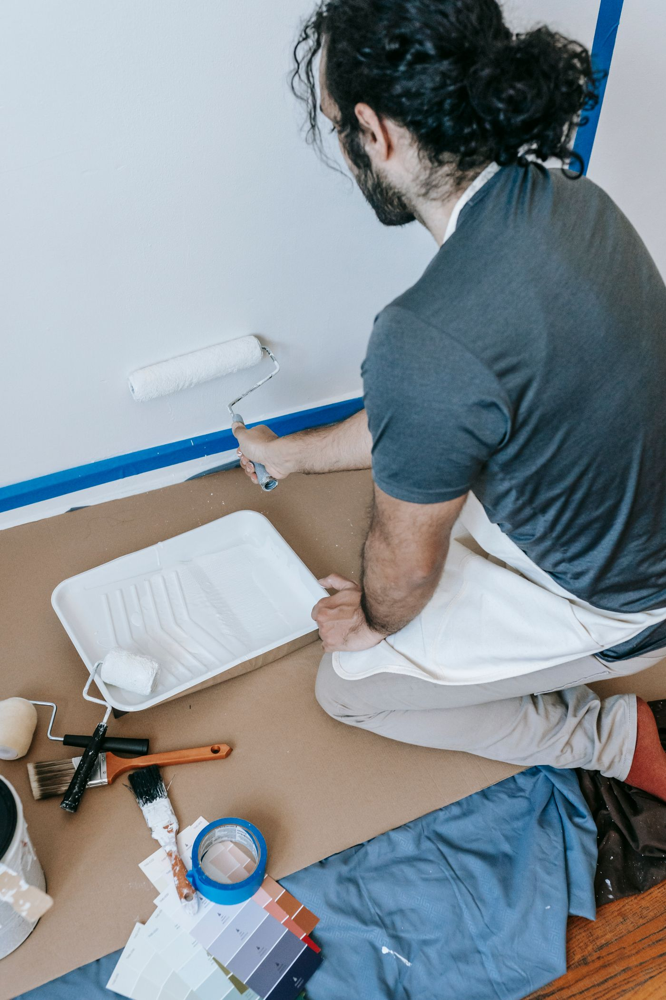
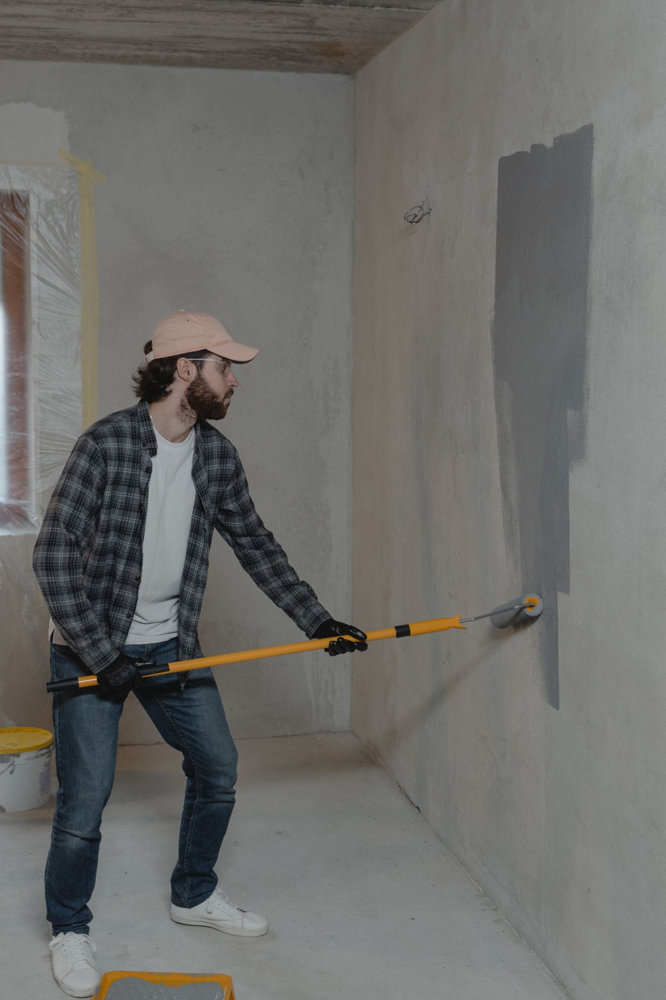
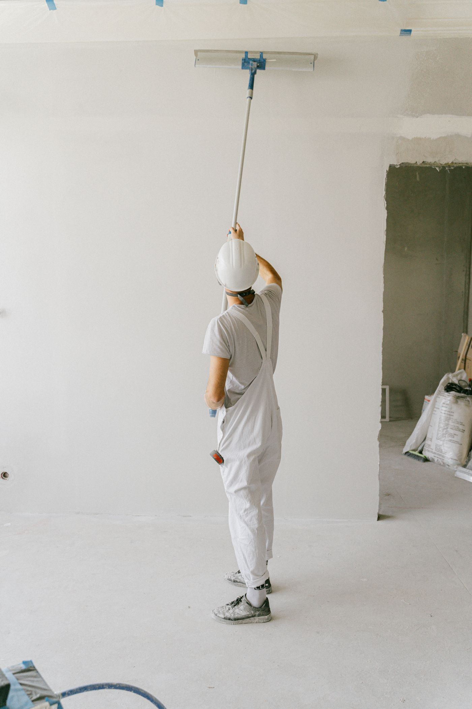

Probrush
Painters in Christchurch, New Zealand.


Painters in Christchurch.
Quotes by phone or email.
Call for a quoteThe jobs people usually call a painter for.
How a job starts
No price list lives on this board. Every room, wall and roofline is different, so every job is quoted on its own facts. Call or email, describe the job, and the number comes back before any work starts.
The firm
Probrush Painters is a painting business listed in Christchurch. One phone number, one inbox. The jobs are the usual kind: interiors that need a fresh coat, exteriors that have had enough of the weather, and the prep that makes paint stay put.
Exteriors
Weatherboards, render and fences, washed down, prepped and painted for the Canterbury weather.
03-352 4075Prep and repair
Scraping, sanding, filling and sealing. The unglamorous half of a paint job that decides how long it lasts.
03-352 4075
03-352 4075
Christchurch
Canterbury, New Zealand
Call for a quote.
Or email for a quote

This is an unofficial preview concept made by Axlios Media (axliosmedia.com). It is not an official site and the business has not approved it. All photos are stock images from Pexels, shown in black and white, and are not the business's own work. Probrush Painters is listed in Christchurch, New Zealand: 03-352 4075, probrushpainters@hotmail.co.nz.